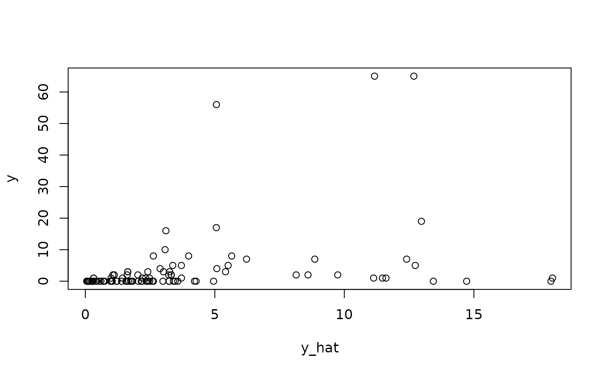

Compute MLEs and log-likelihood for a generalized STAR model. The STAR model requires
a *transformation* and an *estimation function* for the conditional mean
given observed data. The transformation can be known (e.g., log or sqrt) or unknown
(Box-Cox or estimated nonparametrically) for greater flexibility.
The estimator can be any least squares estimator, including nonlinear models.
Standard function calls including
coefficients(), fitted(), and residuals() apply.
Usage
genEM_star(
y,
estimator,
transformation = "np",
y_max = Inf,
sd_init = 10,
tol = 10^-10,
max_iters = 1000
)Arguments
- y
n x 1vector of observed counts- estimator
a function that inputs data
yand outputs a list with two elements:The fitted values
fitted.valuesThe parameter estimates
coefficients
- transformation
transformation to use for the latent data; must be one of
"identity" (identity transformation)
"log" (log transformation)
"sqrt" (square root transformation)
"np" (nonparametric transformation estimated from empirical CDF)
"pois" (transformation for moment-matched marginal Poisson CDF)
"neg-bin" (transformation for moment-matched marginal Negative Binomial CDF)
"box-cox" (box-cox transformation with learned parameter)
- y_max
a fixed and known upper bound for all observations; default is
Inf- sd_init
add random noise for EM algorithm initialization scaled by
sd_inittimes the Gaussian MLE standard deviation; default is 10- tol
tolerance for stopping the EM algorithm; default is 10^-10;
- max_iters
maximum number of EM iterations before stopping; default is 1000
Value
a list with the following elements:
coefficientsthe MLEs of the coefficientsfitted.valuesthe fitted values at the MLEsg.hata function containing the (known or estimated) transformationsigma.hatthe MLE of the standard deviationmu.hatthe MLE of the conditional mean (on the transformed scale)z.hatthe estimated latent data (on the transformed scale) at the MLEsresidualsthe Dunn-Smyth residuals (randomized)residuals_repthe Dunn-Smyth residuals (randomized) for 10 replicateslogLikthe log-likelihood at the MLEslogLik0the log-likelihood at the MLEs for the *unrounded* initializationlambdathe Box-Cox nonlinear parameterand other parameters that (1) track the parameters across EM iterations and (2) record the model specifications
Details
STAR defines a count-valued probability model by (1) specifying a Gaussian model for continuous *latent* data and (2) connecting the latent data to the observed data via a *transformation and rounding* operation.
The expectation-maximization (EM) algorithm is used to produce
maximum likelihood estimators (MLEs) for the parameters defined in the
estimator function, such as linear regression coefficients,
which define the Gaussian model for the continuous latent data.
Fitted values (point predictions), residuals, and log-likelihood values
are also available. Inference for the estimators proceeds via classical maximum likelihood.
Initialization of the EM algorithm can be randomized to monitor convergence.
However, the log-likelihood is concave for all transformations (except 'box-cox'),
so global convergence is guaranteed.
There are several options for the transformation. First, the transformation
can belong to the *Box-Cox* family, which includes the known transformations
'identity', 'log', and 'sqrt', as well as a version in which the Box-Cox parameter
is estimated within the EM algorithm ('box-cox'). Second, the transformation
can be estimated (before model fitting) using the empirical distribution of the
data y. Options in this case include the empirical cumulative
distribution function (CDF), which is fully nonparametric ('np'), or the parametric
alternatives based on Poisson ('pois') or Negative-Binomial ('neg-bin')
distributions. For the parametric distributions, the parameters of the distribution
are estimated using moments (means and variances) of y.
Note
Infinite latent data values may occur when the transformed Gaussian model is highly inadequate. In that case, the function returns the *indices* of the data points with infinite latent values, which are significant outliers under the model. Deletion of these indices and re-running the model is one option, but care must be taken to ensure that (i) it is appropriate to treat these observations as outliers and (ii) the model is adequate for the remaining data points.
References
Kowal, D. R., & Wu, B. (2021). Semiparametric count data regression for self‐reported mental health. Biometrics. doi:10.1111/biom.13617
Examples
# Simulate data with count-valued response y:
sim_dat = simulate_nb_friedman(n = 100, p = 5)
y = sim_dat$y; X = sim_dat$X
# Select a transformation:
transformation = 'np'
# Example using GAM as underlying estimator (for illustration purposes only)
if(require("mgcv")){
fit_em = genEM_star(y = y,
estimator = function(y) gam(y ~ s(X1)+s(X2),
data=data.frame(y,X)),
transformation = transformation)
}
#> Loading required package: mgcv
#> Loading required package: nlme
#> This is mgcv 1.8-42. For overview type 'help("mgcv-package")'.
# Fitted coefficients:
coef(fit_em)
#> (Intercept) s(X1).1 s(X1).2 s(X1).3 s(X1).4
#> 3.272750e-03 4.083375e-03 -3.924544e-02 7.263968e-03 -6.201162e-02
#> s(X1).5 s(X1).6 s(X1).7 s(X1).8 s(X1).9
#> -2.290125e-02 -6.514381e-02 -1.108150e-02 3.255302e-01 3.335061e-01
#> s(X2).1 s(X2).2 s(X2).3 s(X2).4 s(X2).5
#> -4.510772e-12 -3.538967e-12 -4.255166e-12 -6.304467e-12 -1.848074e-12
#> s(X2).6 s(X2).7 s(X2).8 s(X2).9
#> 6.650186e-12 -3.312680e-12 3.442796e-11 3.411655e-01
# Fitted values:
y_hat = fitted(fit_em)
plot(y_hat, y);

# Log-likelihood at MLEs:
fit_em$logLik
#> [1] -206.6579